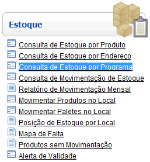
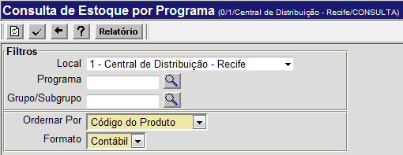
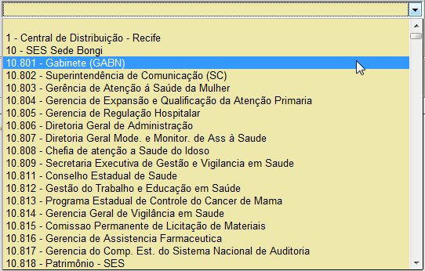
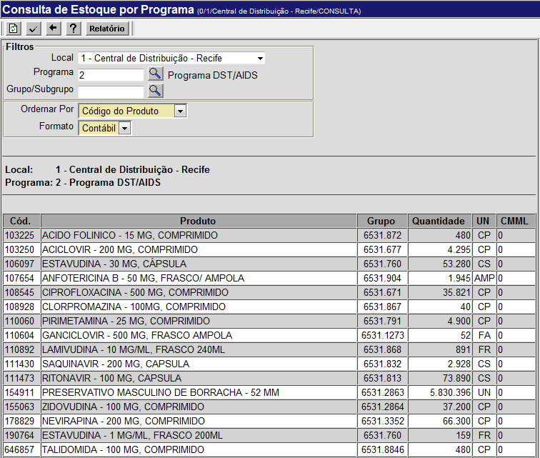

Consulta de Estoque por Programa [ Voltar ]Para
consultar a quantidade
existente em estoque dos produtos associados a um programa, clique em "Consulta de
estoque por programa" dentro do menu "Estoque". 
O sistema vai abrir a seguinte tela: 
Para gerar uma lista de estoque para um determinado programa, siga os passos abaixo: 1º Passo: informe o local desejado para esta consulta. Ao clicar nesta barra, será mostrada uma lista de locais. Clique no local desejado. 
2º
Passo: selecione o programa e/ou o grupo desejados . Para exibir no relatório apenas os produtos de um determinado programa e/ou grupo, informe nestes campo os códigos do programa e/ou do grupo - ou clique nos respectivos botões 3º Passo: determine a ordenação e o formato do relatório. O relatório pode ser ordenado por código, por descrição ou por programa. Escolha a opção que preferir e selecione se o relatório deve ser mostrado no formato contábil ou no físico. Passo opcional: se desejar que a lista de produtos inclua os valores de cada um, selecione a opção "Mostrar valores". 4º
Passo: clique no botão 
4º Passo: se você desejar
imprimir o relatório, clique no botão |